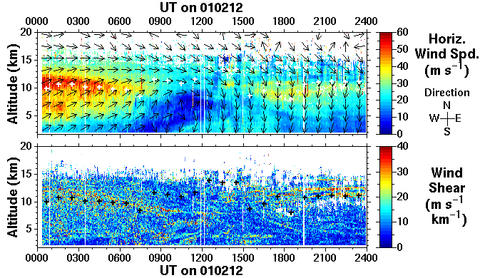
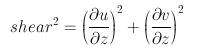

The horizontal wind vector is derived using the Doppler beam
swinging technique, i.e. observations are made in a cyclic sequence of
different beam pointing directions. The wind speed is indicated by the
colour scale and the VECTOR direction by the arrows (which represent
means over 1 hour in time and 2.1 km in altitude). Data are blanked
where low signal-to-noise ratios make the Doppler shift evaluation
unreliable. The vertical shear of the horizontal wind is derived from
the horizontal wind vectors (over an altitude interval of 300 m)
by:

where:
- u - zonal velocity, i.e. component of horizontal wind towards East
(m s-1)
- v - meridional velocity, i.e. component of horizontal wind towards North
(m s-1)
- z - altitude (m)
High values of wind shear are particularly useful for identifying
frontal zones; there is typically a corresponding high shear zone
above the jet in connection with such features. Frontal zones can also
sometimes be characterised by an enhancement of radar return signal
power owing to the increase of static stability. Note that a sharp
change in wind direction, even without a change of speed, also
constitutes a shear; the region of high shear around 6 km, between
1000 and 1200 UT, in the example above is characterised by a large
rotation of the horizontal wind vector. This layer will be mentioned
again in connection with the spectral width
.